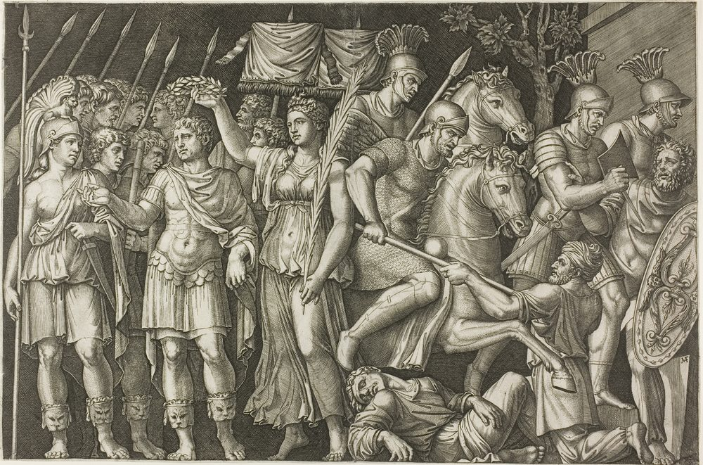
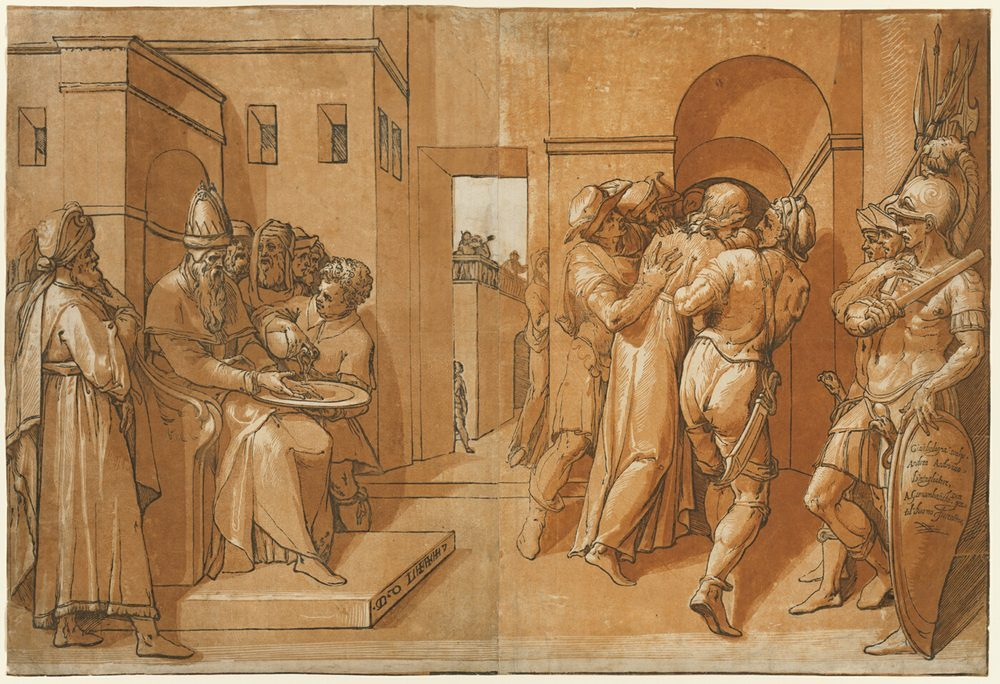
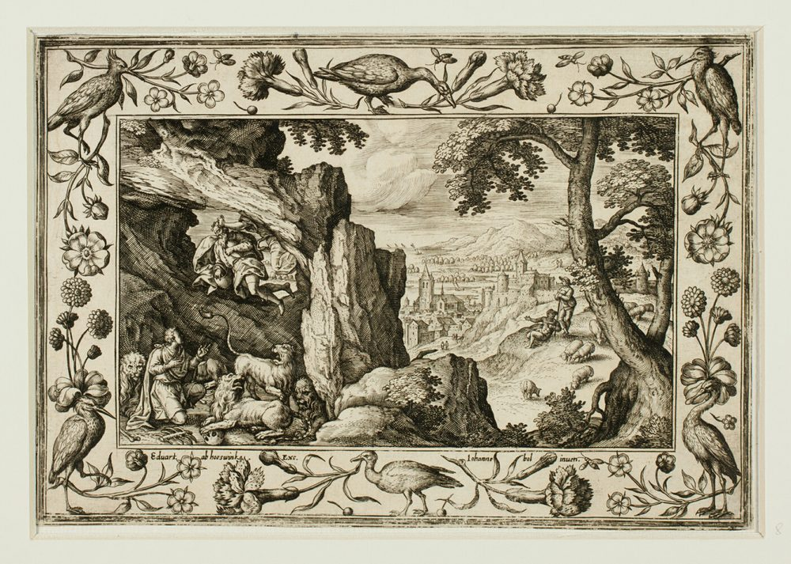

Our Government
Our Government
Scripture speaks plainly about rulers and nations, and it does not flinch. Authority is ordained of God; the believer submits, pays what is owed, and prays for those in power — and above every throne there stands a King who is not subject to any of them. This page is about our government: the government of Maspor, under our King, the offices we fill, and the ground on which we hold them.
The first truth about power
Rulers rise and fall by his hand alone
No ruler rises apart from God's appointment. He raises up and puts down, and the powers that be are ordained of him. This is not a passive doctrine about the past; it is the reason a believer can sleep at night in a country he did not choose. Authority is not a human achievement that might fail. It is a permission that stands or falls with him who grants it — and the throne itself is held under his authority, never apart from it.
“Let every soul be subject unto the higher powers. For there is no power but of God: the powers that be are ordained of God.”
Romans 13:1
“And he changeth the times and the seasons: he removeth kings, and setteth up kings…”
Daniel 2:21
“This matter [is] by the decree of the watchers, and the demand by the word of the holy ones: to the intent that the living may know that the most High ruleth in the kingdom of men, and giveth it to whomsoever he will, and setteth up over it the basest of men.”
Daniel 4:17
“By me kings reign, and princes decree justice. By me princes rule, and nobles, [even] all the judges of the earth.”
Proverbs 8:15–16
Rulers rule because he permits it. Laws bind because he gives them — and the first thing he asks of a man who lives under them is to submit for conscience’s sake.

Submit for conscience’s sake
Believers are told to submit to lawful authority — not out of fear alone, but for the Lord's sake, as free servants of God. Notice what that is and what it is not. It is not servility: the men God tells to submit are free men, and the reason they submit is that the ordinance underneath them is his.
“Submit yourselves to every ordinance of man for the Lord's sake: whether it be to the king, as supreme; or unto governors… for the punishment of evildoers, and for the praise of them that do well.”
1 Peter 2:13–14
“Honour all [men]. Love the brotherhood. Fear God. Honour the king.”
1 Peter 2:17
“Put them in mind to be subject to principalities and powers, to obey magistrates, to be ready to every good work.”
Titus 3:1
Obedience is not servility, and it is not free of charge. What is honestly owed is honestly owed; the next duty is to render to all their dues.
Render to all their dues

Christ himself drew the line, and he drew it in answer to a question about the tribute coin: what belongs to earthly rulers is rendered to them, and what belongs to God is rendered to God. Tribute, custom, fear, and honour are not taxes in the modern sense. They are debts, and debts are paid.
“Render therefore unto Cæsar the things which are Cæsar's; and unto God the things that are God's.”
Matthew 22:21
“Render therefore to all their dues: tribute to whom tribute [is] [due]; custom to whom custom; fear to whom fear; honour to whom honour.”
Romans 13:7
“Wherefore [ye] must needs be subject, not only for wrath, but also for conscience sake.”
Romans 13:5
What belongs to Caesar is Caesar’s, and what belongs to God is God’s. And the third thing Scripture asks of us is smaller than either of them, and harder to keep: to pray for those in authority.
Pray for those in authority
The first duty named for the gathered church is not organising, and it is not self-protection. It is prayer — for kings, and for all that are in authority, that we may lead quiet and peaceable lives. Whatever a man's politics, this duty does not bend to them.
“I exhort therefore, that, first of all, supplications, prayers, intercessions, [and] giving of thanks, be made for all men; for kings, and [for] all that are in authority; that we may lead a quiet and peaceable life in all godliness and honesty.”
1 Timothy 2:1–2
We pray for kings, and we are not permitted to choose them. Whatever a man’s politics, the duty does not bend to them — and a nation is still measured by whether righteousness exalteth a nation.
Righteousness exalteth a nation
A nation is measured not by its power but by its righteousness. This is the honest measure of a country, and it is the reason a believer can love a nation without lying about it. God blesses nations; he also judges them, and the two facts are the same fact seen from two sides.
“Righteousness exalteth a nation: but sin [is] a reproach to any people.”
Proverbs 14:34
“Blessed [is] the nation whose God [is] the LORD; [and] the people [whom] he hath chosen for his own inheritance.”
Psalm 33:12
“And what nation [is] [there] [so] great, that hath statutes and judgments [so] righteous as all this law, which I set before you this day?”
Deuteronomy 4:8
A nation is measured by its righteousness and not by its power, and no amount of it gets to decide who holds the throne. That question God has settled, and he settled it in a manner no parliament has ever improved on: how rulers are chosen.
How rulers are chosen
Scripture does not set the choosing of rulers by popular vote. Men are first qualified — proved able, fearing God, men of truth, hating covetousness — and then the choice is committed to the LORD by lot, that the disposing of it may be his alone. The people put forward the able; God, by the casting of the lot, makes the choice. It is a strange constitution, and it is the one the Word describes.
“Moreover thou shalt provide out of all the people able men, such as fear God, men of truth, hating covetousness; and place [such] over them, [to] [be] rulers of thousands, [and] rulers of hundreds, rulers of fifties, and rulers of tens.”
Exodus 18:21
“Take you wise men, and understanding, and known among your tribes, and I will make them rulers over you.”
Deuteronomy 1:13
“The lot is cast into the lap; but the whole disposing thereof [is] of the LORD.”
Proverbs 16:33
“And they gave forth their lots; and the lot fell upon Matthias; and he was numbered with the eleven apostles.”
Acts 1:26
The people put forward the able, and then the choice is committed to the LORD. But a qualification is a commission and not a licence — and a commission ends when rulers command what God forbids.
When rulers command what God forbids

Submission to the powers that be is not a rival loyalty set against the King — it is obedience to the One who set them in their place. A ruler's seat itself is held under him, and the commands of such a man are not a second law. Which is why, when a ruler calls men to break the King's law, they have not been asked to choose between two masters. They have been told to refuse one man who has stepped outside the commission he was given — and to do it quietly, and at cost if need be.
“We ought to obey God rather than men.”
Acts 5:29
“Whether it be right in the sight of God to hearken unto you more than unto God, judge ye.”
Acts 4:19
“If it be [so], our God whom we serve is able to deliver us from the burning fiery furnace, and he will deliver [us] out of thine hand, O king. But if not, be it known unto thee, O king, that we will not serve thy gods, nor worship the golden image which thou hast set up.”
Daniel 3:17–18
The refusal is not a rebellion against the office. It is obedience to the One who gave it — which is why we can say it without embarrassment, that every throne stands under a higher one.
And above them all
Every throne stands under a higher one
This is where government ends and worship begins. The kingdom belongs to the LORD, his dominion is above all, and no arrangement of men — ours included — can claim a warrant he did not give. We hold our rulers in prayer rather than in our own right.
“The LORD hath prepared his throne in the heavens; and his kingdom ruleth over all.”
Psalm 103:19
“Thine, O LORD, [is] the greatness, and the power, and the glory, and the victory, and the majesty: for all [that] [is] in the heaven and in the earth [is] [thine]; thine [is] the kingdom, O LORD, and thou art exalted as head above all.”
1 Chronicles 29:11
This is where government ends and worship begins. Every law among men is derivative, and above the whole of them there is one who is King of kings, and Lord of lords.
Questions on Our Government
Does Scripture tell us to obey rulers?
Yes, and it is the first instruction it gives about government. But it is obedience with a boundary drawn in it, and the boundary is not an opinion we added — it is the throne above the throne. Obedience runs until a ruler commands what the King forbids, and at that line the Scripture answers plainly.
What if a ruler is unjust?
Then his power was never his own to keep — it is lent, and lent by the only Lawgiver, and he still removes kings and sets up kings (Daniel 2:21). An unjust ruler is not a second authority standing over us. He is one man exceeding his commission. Nothing in the Bible promises you a country you will enjoy; it promises you a King who outranks the country.
Must we pay taxes and honour the ruler?
Yes — tribute, custom, fear, and honour, to those to whom they are due. What is owed is not the same for every man; it depends on residency or domicile. How and where we make those payments is a practical matter, and it is handled on Our Benefits.
Who is the highest authority of all?
The LORD, and he is the only Lawgiver. We have set out why at length on Our Charter, because it is a question of what we believe rather than of how we are governed. Briefly: there is no second source of authority, and no rival lawgiver. Every law among men is derivative.
How are rulers to be chosen?
Not by popular vote. A ruler must first be qualified — able, fearing God, a man of truth, hating covetousness (Exodus 18:21) — and then the choice is given to the LORD by lot, for the whole disposing thereof is of the LORD (Proverbs 16:33). Which is not to say elections are forbidden; it is to say an election that produces an unqualified man is not the constitution the Word describes.
Is any authority exempt from the law?
No. A ruler's office is given, not assumed, and it is bounded by the King's word just as ours is. That is not a democratic idea we have borrowed; it is the reason the question can be asked of a king at all. We obey the powers that be for the Lord's sake — but no office, however high, becomes a second lawgiver.